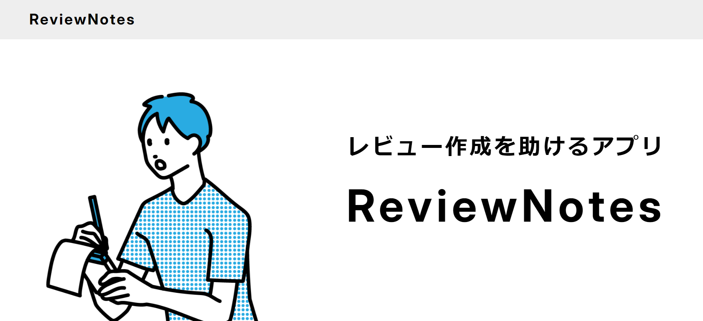
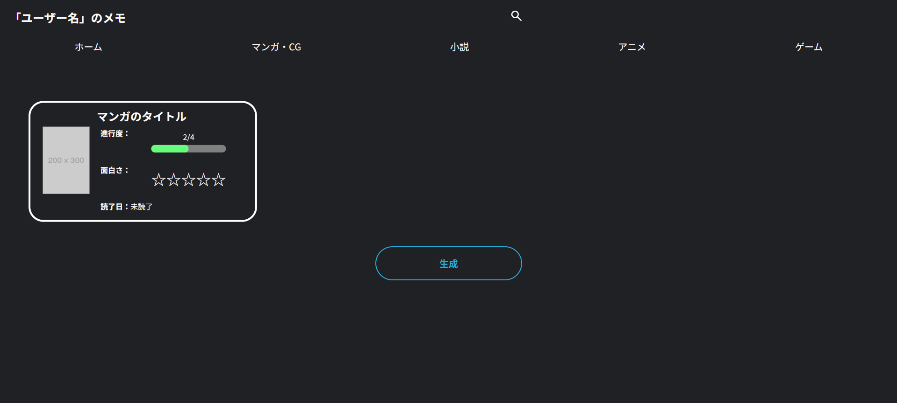
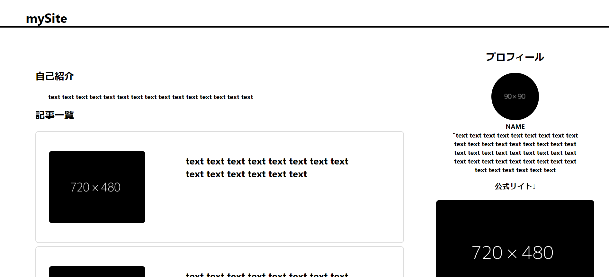
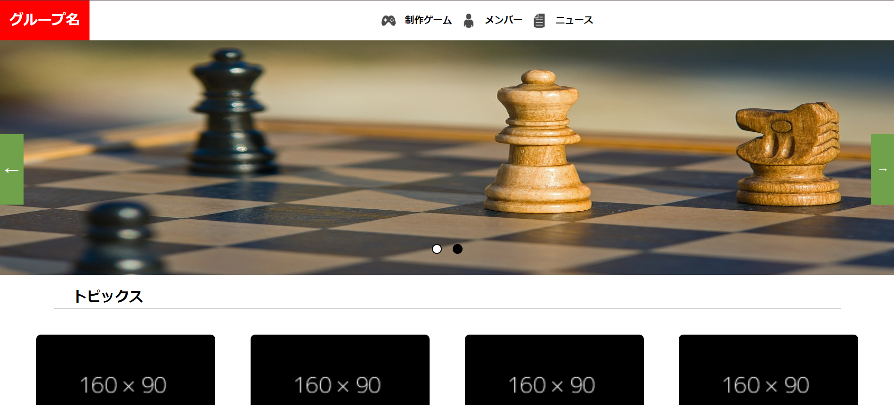
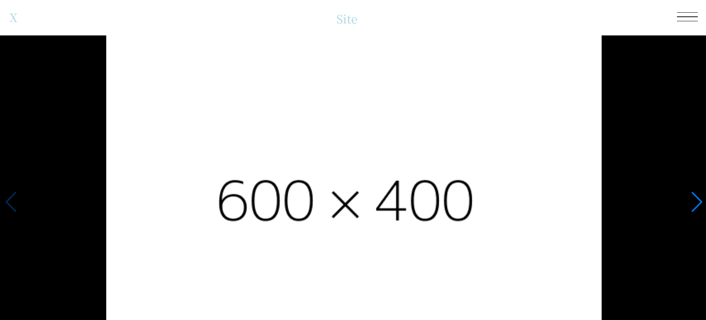

作品一覧
pickup

ReviewNotesのサイト
制作日:2024年8月
製作期間:4日
制作理由:ReviewNotesを説明するため
苦労したこと:ユーザーが見やすいと感じるような空白の設定
工夫した点:余白を少し大きくとることで見やすくしました
ReviewNotesの制作プロセスはこのサイトに記載しております。

ReviewNotes
(memoApp)
制作日:2024年8月
製作期間:1週間
制作理由:レビューをより手軽に作れるアプリが欲しかったため
苦労したこと:DOMを用いた要素の作成
工夫した点:黒を基調とすることで長時間使用していても目に負担がかからないようにしました
その他

MySite
制作日:2023年2月
製作期間:2日
制作理由:好きなクリエイターの情報をまとめるため
苦労したこと:画像とテキストを横並びに表示すること
工夫した点:担当作品を3カラムにしてホバーもつけました

GroupSite
制作日:2023年2月
製作期間:約2か月
制作理由:友達と作ったゲームを載せるため
苦労したこと：スライドショーの実装
工夫した点:スライドが自動的に動くようにしました

dynamicSite
制作日:2024年6月
製作期間:約2週間
制作理由:好きなクリエイターの情報をまとめるため、Reactを学ぶため
苦労したこと:Reactを用いたスライドショーの実装
工夫した点:スクロール時に要素が浮き上がるようにしました
参考サイト
GroupSite:任天堂公式サイト
dynamicSite:ブラック☆ロックシューター公式サイト
memoAppSite:Chain